Ankommen
2003 · von Freiburg nach Australien
3. September 2003, gegen 15 Uhr
Freiburger Hauptbahnhof. Umarmungen, Winken, eine Menge Freunde auf dem Bahnsteig.
Marokko war der erste Neuanfang bei null gewesen. Deutschland der zweite. Australien würde der dritte werden. Inzwischen, sollte man meinen, hätte es leicht sein müssen.
Sich einleben
Die ersten Jahre
Alles war bereit
Die Papiere waren erledigt, bevor das Flugzeug landete: Staatsbürgerschaft auf der einen Seite, Daueraufenthalt auf der anderen. Sobald man australischen Boden betrat, war alles für Behörden und Pflichten geregelt. Schule und Medicare kamen zuerst, der Rest war eine Frage der Zeit.
Das Leben war ganz normal, australischer Mittelstand. Es fehlte an nichts. Wenn man etwas brauchte, wurde es gekauft. Punkt. Für alles war gesorgt, bis hin zum Babytragetuch.
Das hier ist also keine Geschichte über Geld. Es ist eine Geschichte über den Kopf.
Ein Haus voller Erinnerungen
Das Haus, das die Familie bei der Ankunft empfing, war ein Familienhaus voller Kindheitserinnerungen. Drei Jahre später gehörte es uns. Es ist bis heute dasselbe Haus.
Es war halb möbliert. Der Rest kam aus Deutschland, in einem halben Schiffscontainer, organisiert über einen früheren Arbeitgeber: die Geräte, der Hausrat und, am wichtigsten von allem, die Waschmaschine. Mit Zwillingen hatte sie nie einen freien Tag.
Es gab einen richtigen Büroschreibtisch, schwer, mit Holzgestell, und ein Zimmer dafür. Es gab genug Zimmer für alle, sogar eines für die Musik. Ein Haus voller Erinnerungen und Gefühle.
Nicht jeder Neuankömmling fängt so an. Später hörte ich Geschichten von Leuten, die in leere Häuser zogen, mit ein paar Stühlen als einzigem Mobiliar. Ein paar Jahre später bauten sie sich einen Pool.
Die Sprache, die verloren ging
Jahre zuvor hatte ein junger Mann in einem fahrenden Bus in Casablanca Französisch in Echtzeit ins Deutsche übertragen. Jetzt stand derselbe Mann in einem australischen Wohnzimmer, nickte und lächelte, meistens an den falschen Stellen.
Zu Hause war die Frage immer dieselbe, auf Deutsch: „Was haben sie gesagt?“
Es war dieselbe Frage, nur umgekehrt, die Jahre zuvor auf einer ersten Reise nach Marokko gestellt worden war, in einem Haus voller Familie, die Fragen auf Arabisch abfeuerte. Lustig war es damals auch nicht. Aber so lief es: Einer stützte den anderen, jedes Mal. Jemanden zu finden, der so denkt wie man selbst, war das nicht überhaupt der Grund gewesen, Marokko zu verlassen?
Mit 45, mit Kindern, ohne Arbeit und ohne Englisch, endete ein Vorstellungsgespräch mit: „Sie sind für uns überqualifiziert.“
November, auf den Kopf gestellt
In Deutschland war der November der graue Monat gewesen: kalt, dunkel, alles stand still. Dann wurde er der Monat, in dem die Zwillinge geboren wurden. Und in Australien wurde der November zum Sommer.
Die Zwillinge waren 10 Monate alt, und sie waren das Erste und Letzte, woran man jeden Tag dachte. Ein großes Haus, eine ruhige Straße, herrliches Wetter. Die Kleinen liefen draußen ohne Windeln herum. Windeln gab es nur zum Schlafen. In Deutschland hatte man vor jedem Spaziergang mit dem Kinderwagen zuerst die Windel geprüft.
Englisch lernen. Oder war es australisches Englisch? 😒🤔
Australisches Englisch ist eine Sprache, in der eine Verneinung ein Kompliment ist. „Not bad“ (nicht schlecht) kann heißen, dass es hervorragend war. Wenn man jemandem zustimmt, sagt man ihm, er liege „not wrong“ (nicht falsch). Der Komiker Carl Barron hat eine ganze „Not bad“-Nummer darüber.
Nicht billig. Nicht weit. Kein langsames Auto. Und die Leute, die Australien nie verlassen haben? Nicht wenige.
Eine Insel, weit, weit, weit weg
Für alle, die aus Übersee ankommen: Australien ist anders als alles, was man kennt, wo man gelebt hat oder aufgewachsen ist. Es ist eine Insel, weit, weit, weit weg vom Rest der Welt. Die Einheimischen scherzen, wie weit sie hinter der Sonne liegen.
Vergiss, was du im Kopf mitgebracht hast, wie die Dinge sein sollten, und pass dich an, wie sie sind. Für Vergleichen oder Jammern ist keine Zeit. Was du siehst, ist, was du bekommst. Leiste deinen Teil und mach mit. Alles, was du brauchst, um zu arbeiten, ein Geschäft zu gründen oder deine Fähigkeiten zu nutzen, ist schon da.
Drei Dinge, die man braucht
Erstens, ein Auto. Öffentliche Verkehrsmittel gibt es nicht immer um die Ecke, und die nächste Bushaltestelle kann eine halbe Stunde zu Fuß entfernt sein. 2018 hatten nur 12 % der Haushalte in Brisbane eine Haltestelle im Umkreis von 400 m mit mindestens einer Verbindung alle 30 Minuten. 2024 fehlte zwei Dritteln der Einwohner Brisbanes noch immer ein häufiger Takt im Umkreis von 800 m. Das Auto ist also das meistgenutzte öffentliche Verkehrsmittel Australiens. Im Berufsverkehr sieht man selten mehr als eine Person im Auto. Nach den ersten drei Monaten Arbeit ist ein Auto das Erste, was sich jeder kaufen will.
Von dort, wo wir wohnen, braucht die Fahrt in die Stadt etwas Geduld. Im morgendlichen Berufsverkehr in Brisbane dauern 10 km im Schnitt etwa 24 Minuten.
Zweitens, ein Haus. Australier wohnen in die Breite, nicht in die Höhe. Außerhalb des CBD (Central Business District, der Innenstadt) sind die Vororte selten höher als ein Stockwerk. „Jesus of Suburbia“, wie Green Day sang. Mieten ist nicht billig. (Da ist sie, die Falle: „nicht billig“ statt „teuer“. 🙃😆😂) Die mittlere Wochenmiete für ein Haus im Großraum Brisbane lag Anfang 2026 bei etwa 650 Dollar.
Drittens, Platz. Viel davon. Der Großraum Brisbane ist flächenmäßig die größte der sechs Hauptstädte Australiens, mit 15.842 km². Das ist etwa zehnmal so groß wie der Großraum London, mit einem Bruchteil der Menschen.
Ein Werktag in der Vorstadt
Einfamilienhäuser säumen eine grüne Straße: Rasen, Pools, die Mittelstandshäuser, die man aus amerikanischen Filmen kennt. Manche Neuankömmlinge nennen Australien den 51. Bundesstaat der USA. Vieles wirkt vertraut auf Besucher aus den USA und Kanada, und genau 💯 deshalb sind das heute die Gäste meiner Touren.
Um 9 Uhr sind die Kinder in der Schule und die Eltern bei der Arbeit. Bis halb drei sieht man ein paar Rentner, die den Hund ausführen oder ihre tägliche Runde drehen, und vielleicht 30 Autos fahren den ganzen Tag vorbei. Es gibt große Parks mit Spielplätzen, Sandkästen und Rutschen 🛝 und einen langen, schönen Weg mit dem Kinderwagen am Bach entlang, meist ohne einen anderen Menschen. Ein Paradies für Kinder.
Und irgendwann fühlt man sich allein. Auch das gehört zum Ankommen.
Pflicht, nicht die Uhr
Dann merkt man, wie wichtig hier die Zeit ist. Eigentlich ist es nicht die Uhr. Respekt vor der Zeit hatte Deutschland schon gelehrt. Hier ist es ein Pflichtgefühl: Jeder leistet seinen Teil für die Gemeinschaft.
Niemand sonst ist für dein Handeln verantwortlich, und Gesetz ist Gesetz. Australien hat seine dunkleren Kapitel hinter sich gelassen, um ein gerechtes Land aufzubauen, mit denselben Rechten und Pflichten für alle. Alles liegt bereit, damit du es selbst nachprüfen kannst. Du musst es nur selbst tun, wenn du ENGLISCH sprichst.
Die erste Arbeit
Die erste Arbeit lag etwa eine Autostunde entfernt, im Betrieb des Bruders eines Freundes der Familie. Es war ein Familienbetrieb zu dritt: der Bruder, sein Partner und der Neuankömmling, der elektrische Teile montierte.
Das hieß, allein auf der falschen Straßenseite zu fahren, wie alle hier. Die Verkehrsregeln saßen schnell, und genauso schnell kamen lange Gespräche in der Werkstatt. Das Herauskommen aus dem Haus hatte begonnen.
Zwei Wochen Respekt 🙏
Dann kam ein zweiwöchiger Intensivkurs für qualifizierte Neuankömmlinge: Rechte und Pflichten in Australien, australische Arbeitsstandards, die Gesetze und wie man sich in der Öffentlichkeit verhält. Denk dran, Australien ist einzigartig.
Wozu das alles? Weil zwei Wochen reichen, um die Grundlagen zu lernen, und die Grundlagen lassen sich auf ein Wort bringen: Respekt.
Die Regeln, die niemand aufschreibt
Mateship ist ein Überlebensinstinkt, keine Tugend. Wer aus Marokko kommt, wo Gastfreundschaft eine Aufführung ist (der Tee, das Drängen, die zur Schau gestellte Großzügigkeit), dem kann australische Freundlichkeit flach vorkommen. Kein Aufhebens, keine Show, nur stille Verlässlichkeit, und man macht dem Nächsten das Leben nicht schwerer. Es ist ein alter Reflex aus der Sträflingszeit: Wir sitzen alle im selben Boot gegen das System. Deshalb ist das Augenrollen über Autoritäten hier fast ein Ritual der Zusammengehörigkeit, während in Marokko die Hierarchie respektiert wird, zumindest in der Öffentlichkeit.
Arbeit ist Bürgerpflicht, keine Identität. „Was machst du?“ ist keine Frage nach dem Status. Es geht darum, ob du etwas beiträgst. Zahl deinen Anteil und sei kein „Bludger“ (jemand, der auf Kosten des Systems lebt). Wochenenden sind heilig, und über Workaholics wird gelacht. Die Sünde ist nicht, zu wenig zu arbeiten; sie ist, gar nichts beizutragen.
Englisch ist der Eintrittspreis, nicht die Auslöschung dessen, wer du bist. In Marokko ist es das Normalste der Welt, je nach Situation die Sprache zu wechseln. Hier geht es beim Englisch in der Öffentlichkeit und bei der Arbeit weniger um Identität als um dieselbe Mateship-Logik: eine gemeinsame Sprache, damit alle zusammen vorankommen.
Der rote Faden, der alle drei verbindet: Werde der Gruppe nicht zur Last. Sei freundlich, arbeite, sprich Englisch.
Sechs Wochen in der Praxis
Danach kamen sechs Wochen Praxistraining: dieselben Regeln noch einmal, diesmal durch Tun gelernt. Die Gruppe bestand nur aus qualifizierten Neuzuwanderern: Lehrer, Ingenieure, Ärzte. Jeder wurde in das Fachgebiet geschickt, auf das seine ausländischen Abschlüsse verwiesen, das, was er als seinen Hauptberuf bestätigt hatte.
Der Neuankömmling aus Marokko kam in das Rechenzentrum einer Firma mit rund 600 Arbeitsplätzen. „Day-to-day work“ nannten sie es im Netzwerk-Jargon. Man musste sich mit Computern und Computersystemen auskennen, mit Hard- und Software, und wissen, wie man sich im selben LAN aus der Ferne verbindet und kommuniziert. Und das alles auf Englisch, der einen Sprache, die er nicht verstand. Ohne Englisch war diese Arbeit nicht zu machen.
Aber die wichtigste Fähigkeit stand auf keiner Liste. Es war das Reden. Mach den Mund auf. Sag etwas. Erklär etwas.
Déjà-vu
Kommt einem bekannt vor? Casablanca, 1977. Ein Zwanzigjähriger in einem Touristenbus im Morgengrauen, ohne Ausbildung, ohne echten Wortschatz, der die Worte eines französischen Reiseleiters spontan ins Deutsche überträgt, halb Französisch, halb einfaches Deutsch, und sich alles im Gehen zusammenreimt. „Meine Frauen und Herren.“
Damals redete er ohne die Worte. Jetzt hatte er die Worte im Kopf, nur nicht auf Englisch.
Er konnte nicht reden. Er fiel. Er stand wieder auf und fing bei null an. Wieder einmal.
Die Zwei-Jahres-Regel
Jemand, der ebenfalls aus Übersee kam, hat es einmal so gesagt: Viele Neuankömmlinge machen am Anfang zwei harte Jahre durch. Dann verlassen sie Australien, kommen ein paar Monate später zurück und gehen nie wieder weg.
Das stimmt wirklich. Die ersten zwei Jahre fühlten sich genau so an. Dann kamen das Reden, das Rausgehen, Menschen kennenlernen, arbeiten, und über Nacht änderte sich alles.
Im Rückblick waren diese zwei Jahre nötig: um die Regeln, die Mentalität, die neue Gesellschaft und die Sprache zu verstehen und den Mut zu finden, mit dem eigenen Auto zu fahren, ohne sich im Busch zu verirren.
Schlangen, Spinnen und andere Nachbarn
Eines der wichtigsten Dinge, die dieses Land lehrt, ist die Liebe zur Natur.
Die Ankunft hier hatte einen bitteren Beigeschmack: die Angst vor Australiens Tierwelt. Die Geschichten über Schlangen und Spinnen waren lächerlich, und sie stammten von Leuten, die nie einen Fuß nach Australien gesetzt hatten.
Diesen Leuten antworte ich heute ganz einfach: Wir lieben unsere Schlangen und Spinnen. Es sind wunderschöne Geschöpfe. Man muss nur etwas über sie lernen.
Türen öffnen sich
Sobald man sich seiner Umgebung öffnet, gehen Türen auf. Man lernt, wie viele Bäume es gibt, und Formen, die man nie zuvor gesehen hat, außer vielleicht in einem Dschungelfilm.
Und dann steht man eines Tages vor Bäumen, die älter sind als alles, was man sich vorstellen kann. Hier stehe ich vor zwei Gästen und erkläre, wie die Antarktische Buche funktioniert: ihr frühes Leben in Gondwana und wo ihre Familie heute noch auf der Welt wächst. Diese Bäume sind etwa 3.000 Jahre alt.
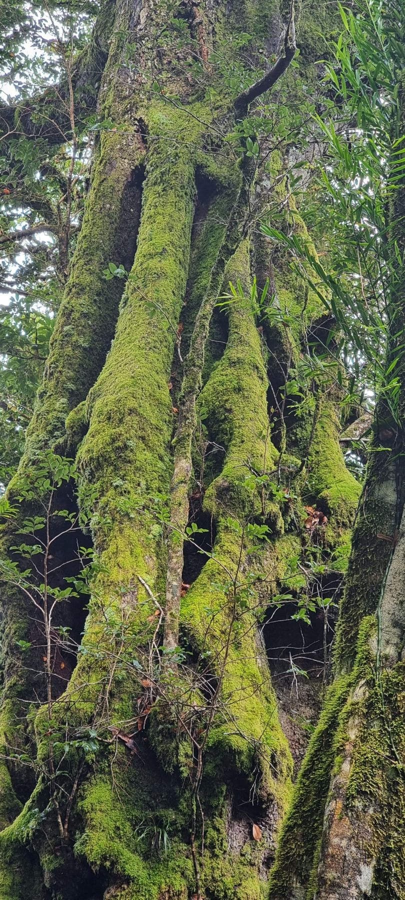
Die Antarktische Buche, kurz gefasst
Wo sie wächst. Nothofagus moorei wächst nur im kühl-gemäßigten Regenwald der Hochlagen Ostaustraliens, zwischen 500 und 1.550 Metern, von Barrington Tops in New South Wales nordwärts bis zu den Plateaus von Lamington und Springbrook in Queensland. Fast der gesamte Bestand an Antarktischen Buchen in Australien liegt im Welterbegebiet Gondwana Rainforests of Australia, und Lamington ist sein nördlichster Außenposten.
Wie sie funktioniert. Sie wächst durch Stockausschlag. Neue Triebe sprießen ringförmig um den Fuß des alten Stammes und wachsen zu Klonen des Mutterbaums heran, sodass ein Kreis von Stämmen in Wahrheit ein einziger Baum ist. Wenn ein alter Stamm fällt, leben die Wurzeln weiter. Der Stamm vor dir mag jung sein; der Baum selbst steht hier seit Tausenden von Jahren.
Woher sie kommt. Ihre Familie, die Südbuchen, zählt 43 Arten im südlichen Südamerika, in Australien, Neuseeland, Neuguinea und Neukaledonien, alles Bruchstücke des alten Superkontinents Gondwana. Fossilien zeigen, dass sie einst auch in der Antarktis wuchsen, vor dem Eis. Botaniker sagen, die Antarktische Buche unterscheide sich kaum von den Blütenpflanzen vor 100 Millionen Jahren.
Ihre Schwäche. Sie braucht feuchtes, feuerfreies Land und erholt sich nur langsam von Bränden.
Erste Touren
Großraum Brisbane
Eine Handvoll Paare
Meine allererste Tour führte zum Mary Cairncross Scenic Reserve. Ein paar weitere folgten im Großraum Brisbane, nicht mehr als fünf. Meist deutsche Paare, manchmal französische.
Da war ich also, ein Marokkaner am anderen Ende der Welt, und verdiente mein Geld auf Deutsch und Französisch. Genau wie damals in Casablanca, vor all den Jahren. Manche Dinge folgen einem, wohin man auch geht.
Die Schweizer Schwestern
Vor Covid · meine erste echte Lehrtour
T fährt, ich rede
Dann nahm mich T mit zwei älteren Schweizer Schwestern mit, um mir zu zeigen, was solche Touren wirklich bedeuten.
Die Arbeitsteilung war einfach. T fuhr. Ich redete. Ich hielt die Schwestern auf dem Laufenden, Kilometer um Kilometer.
Was ich noch kaum kannte, war Australiens Kultur von Zeit und Raum. In Europa bringen einen ein paar Stunden Fahrt in ein anderes Land. Hier bringen sie einen in den nächsten Ort.
Brisbane · Noosa · Rainbow Beach
Von Brisbane nordwärts nach Noosa und zum Steg, dann weiter nach Rainbow Beach.
Der Ort ist nach seinen Sandklippen benannt, und sie verdienen den Namen: Gelb, Braun, Rot, Weiß, Schicht um Schicht. Eisenhaltige Mineralien färben sie, und Wind und Regen malen sie immer wieder neu, sodass sie nie zweimal gleich aussehen. Die Kabi Kabi erzählen es schöner: Yiningie, ein Regenbogengeist, stürzte sich in die Klippen und ließ seine Farben dort zurück.
Fraser Island · Kingfisher Bay
Am Strand entlang zur Fähre und hinüber auf die Insel, die damals noch Fraser hieß. Weiche Sandpisten. Ein Picknick am Lake McKenzie. Das rostige Wrack der Maheno am Strand. Dingo-Schilder. Und nachts das Kingfisher Bay Resort.
Die Tour war ein Erfolg. T war der Lehrer, ich der Schüler, und der Schüler hat bestanden.
Das schottische Paar
Etwa einen Monat später
Der Schüler übernimmt das Steuer
Einen Monat später war der Schüler der Fahrer.
Meine Fahrgäste: ein junger Schotte, Chef bei einer Fluggesellschaft, und seine Frau, die extra aus Schottland gekommen war, um ihn zu besuchen. Ein Mann, der sich mit dem Fliegen auskennt, und jetzt vertraute er mir am Boden.
Und los ging es nach Fraser Island, im Geländewagen. Den Sand-Highway hinunter. Harte Sanddünen hinauf.
Regeln des Sand-Highways
Ja, der Strand ist eine echte Fernstraße. Der 75 Mile Beach an der Ostseite der Insel ist offiziell als Straße ausgewiesen, und es gelten die Verkehrsregeln von Queensland: 80 km/h am Strand, 30 km/h auf den Pisten im Inland und eine Zufahrtsgenehmigung für jedes Fahrzeug. Lass Luft aus den Reifen, auf etwa 18 bis 20 psi, sonst behält dich der Sand. Fahr nur zwei Stunden vor bis zwei Stunden nach Niedrigwasser, sonst redet der Ozean ein Wörtchen mit.
Und ja, er ist auch eine Landebahn. Kleine Flugzeuge starten und landen darauf. Flugzeuge haben Vorfahrt.
November 2022 · die Türen gehen wieder auf
Fast zwei Jahre lang hielt Australien seine Grenzen geschlossen. Als es sie endlich öffnete, schien die ganze Welt auf einmal hereinzuströmen, als wäre dies der letzte sichere Ort auf einer von Covid-Angst zermürbten Landkarte. Die Reiseveranstalter waren überbucht. Jeder Bus, jedes Boot, jeder Reiseleiter war vergeben. Alles wurde zum Nadelöhr.
Dann rief T an. T, der Freund, der auf dieser ersten Fraser-Island-Tour mit den Schweizer Schwestern am Steuer gesessen hatte. Eine deutsche Gruppe kam nach Queensland, und er brauchte jemanden, der ihre Sprache sprach.
Der Auftrag klang einfach. Sie am Flughafen Proserpine abholen, ins Hotel bringen, einweisen, dann nach Süden: zehn Tage, 1.150 km im Reisebus, die ganze Küste hinunter bis Brisbane.
Einfach. Auf dem Papier.
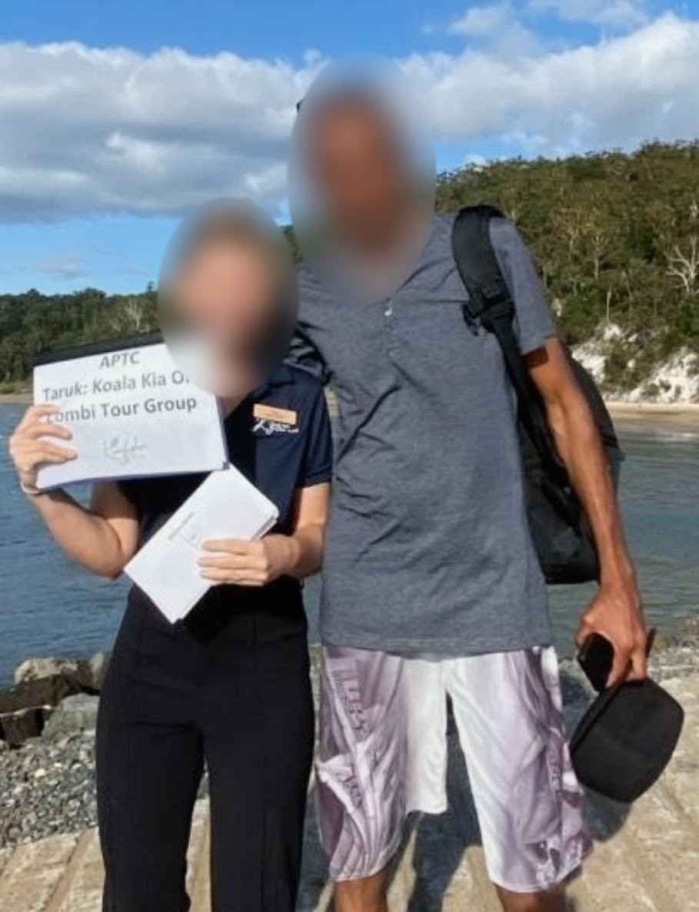
Flughafen Proserpine
Da stand ich also am Ausgang eines kleinen Flughafens in den Tropen, mit einem Schild mit einem Gruppennamen darauf, und wartete darauf, dass Deutschland durch die Tür kam.
Wir trafen uns, stiegen in den Bus, und ich legte auf Deutsch los. Diesmal kam „Meine Damen und Herren“ richtig heraus. Rund 45 Jahre nach „Meine Frauen und Herren“ in einem Touristenbus in Casablanca saß der erste Satz endlich.
Dann sah ich sie mir richtig an. Etwa vierzehn bis sechzehn Leute im Bus, den Busfahrer und mich mitgezählt, und jeder Gast sah mich an, als wäre ich seit Tagen der erste feste Boden. „Sie sprechen Deutsch?“ kam von jedem Sitz gleichzeitig.
Keine Zeit, mich vorzustellen. Und was hätte ich auch sagen sollen? Niemand hatte mir gesagt, dass ich auf mich allein gestellt sein würde. Und niemand hatte ihnen gesagt, mit wem sie es zu tun bekämen.
Allein seit Melbourne
Die Geschichte kam in Bruchstücken heraus, alle redeten durcheinander. Ihre Reise war in Deutschland als eine große Australienreise in vier Etappen verkauft worden: Melbourne, Sydney, Ayers Rock, Queensland. Auf jeder Etappe sollte ein eigener Reiseleiter auf sie warten, jemand wie ich, der vor der Gruppe stand und erklärte, was als Nächstes kam.
In Melbourne, ganz am Anfang, tauchte dieser Jemand nie auf. Sie saßen in ihrem Hotel und wussten nicht, an wen sie sich wenden oder was sie tun sollten. Vom ersten Tag an lief die Reise auf Hoffnung.
Queensland war mein Teil. Und als sie endlich jemanden fanden, der ihre Sprache sprach, landete alles, was schiefgegangen war, auf einmal bei mir.
Airlie Beach · 2 Nächte
Erster Halt: das Mantra Club Croc in Airlie Beach. Ich rief so schnell wie möglich eine Besprechung ein, draußen im Hotelrestaurant, bevor sich die Fragen noch höher stapeln konnten. Irgendwo zwischen der ersten und der zehnten Frage traf es mich: Jede Entscheidung von jetzt an liegt bei mir, und es gibt niemanden, den ich anrufen kann.
Ich stellte den nächsten Tag vor und las vom Programmblatt ab. Fähre zu den Whitsundays. Whitehaven Beach, Hill Inlet und die Aussicht, Baden, Essen auf einer anderen Insel, dann mit dem Boot zurück zur großen Fähre und schließlich ins Hotel.
Die Schnorchel-Frage
Einer Dame klappte der Mund auf.
„Schnorcheln? Gehen wir schnorcheln?“
„Nicht, dass ich wüsste“, sagte ich. Ich sah noch einmal aufs Blatt. Kein Schnorcheln. Dem Blatt war das egal.
Sie fing an zu weinen. Sie habe ihr ganzes Leben in das Schnorcheln in den Whitsundays investiert, sagte sie. Zwei Tage lang weinte sie weiter und erzählte es mir immer wieder.
Whitsundays · Whitehaven Beach
Am nächsten Morgen, Schnorcheln hin oder her, wartete die Fähre. Die Whitsundays sind ein Streufeld aus 74 Inseln, und die, wegen der alle kommen, ist Whitehaven: weißer Sand, so fein, dass er unter den Füßen quietscht.
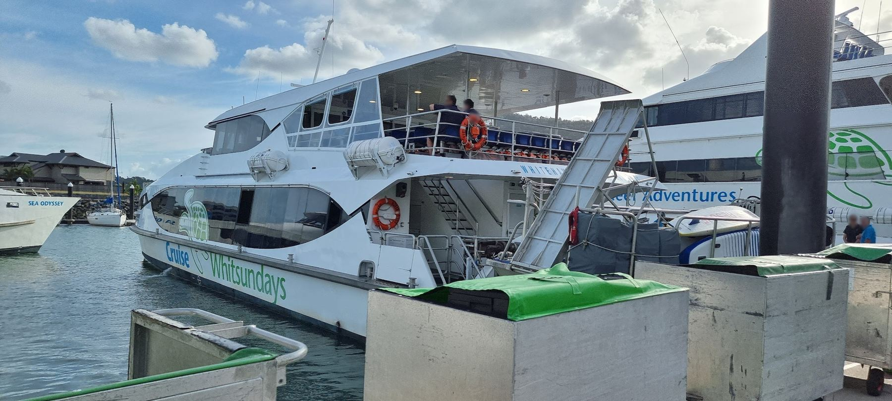
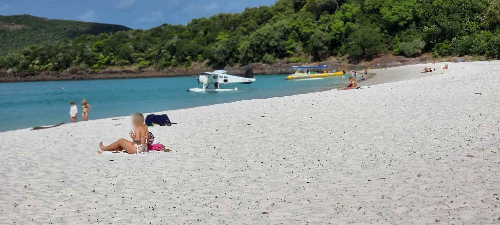
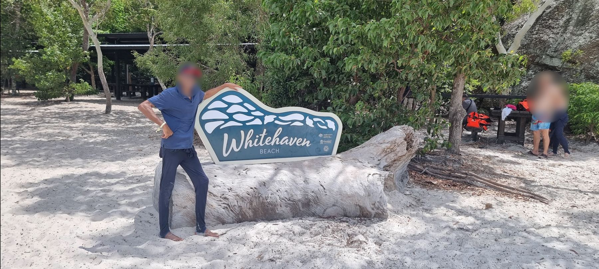
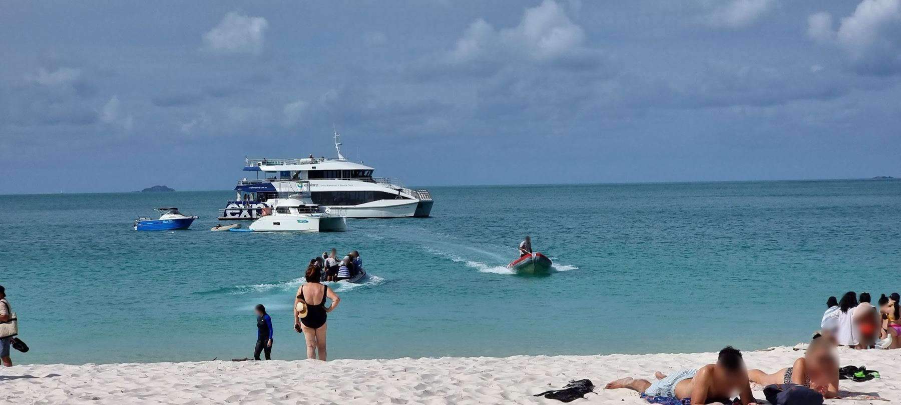
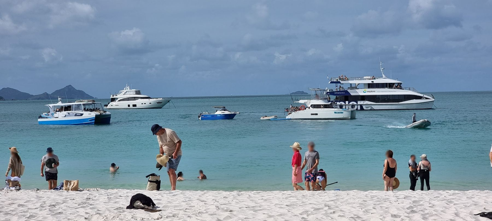
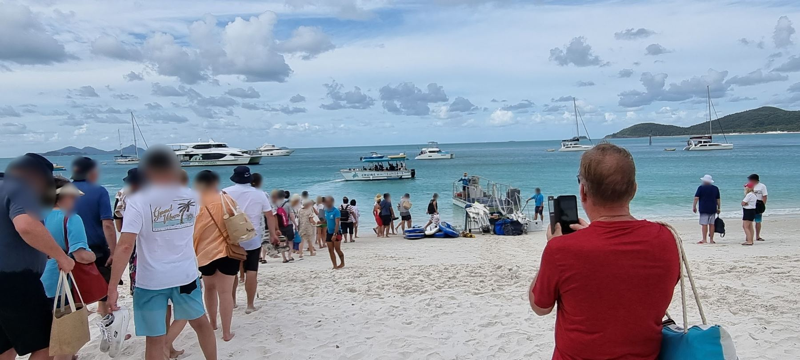
Cape Hillsborough
Dann begann die lange Straße nach Süden. Erster Halt: Cape Hillsborough, wo der Busch direkt bis zum Strand hinunterreicht.
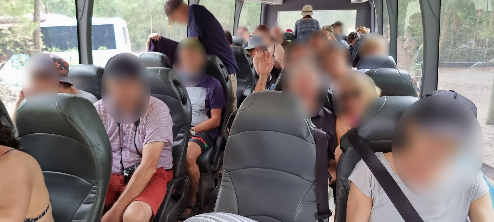
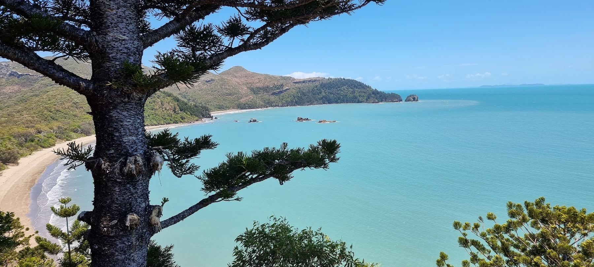
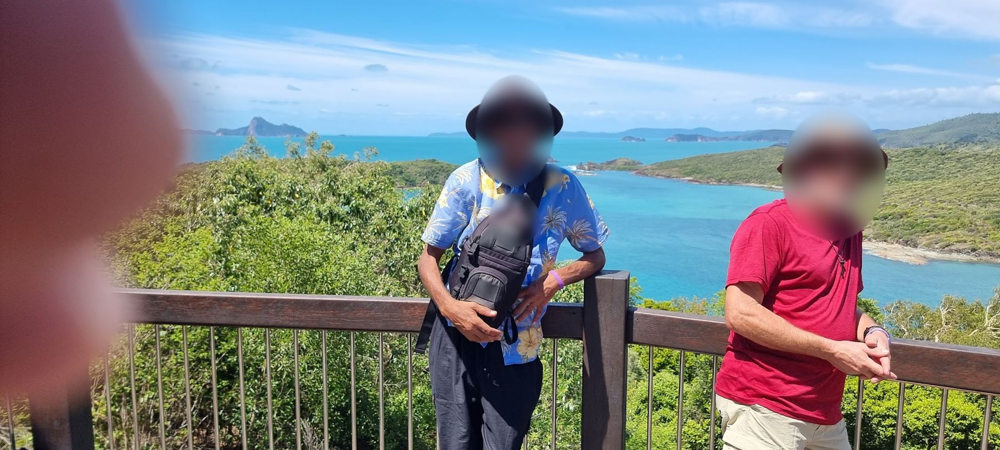
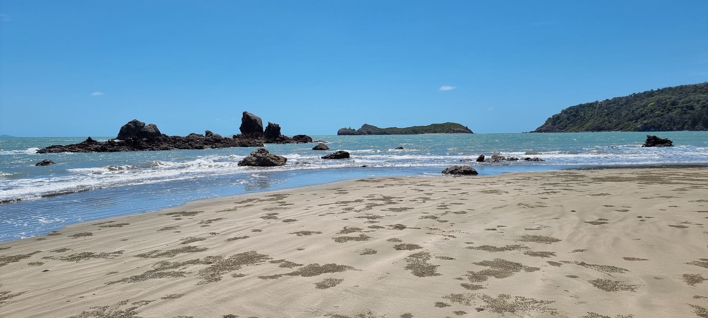
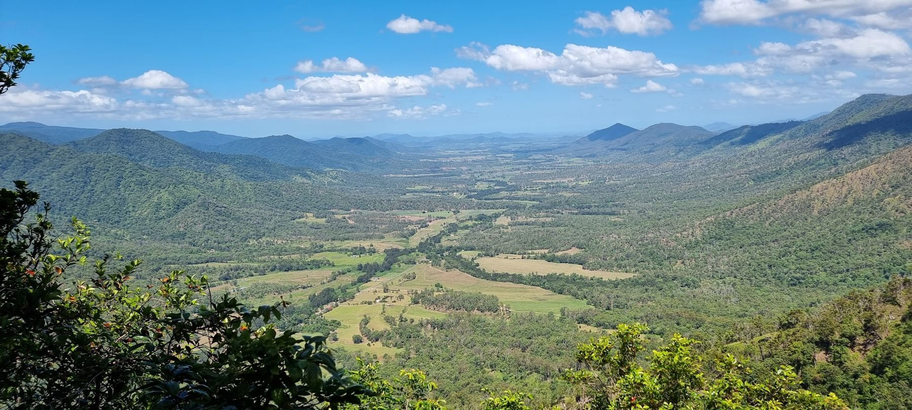
Rockhampton · 1 Nacht
Weiter nach Rockhampton für eine Nacht. Die Rinderhauptstadt Australiens, und das merkt man: Sogar die Statuen in der Stadt sind Bullen.
Agnes Water · 1 Nacht
Agnes Water bescherte uns die besten Fish and Chips der ganzen Reise. Und die längste Nacht.
Fast Mitternacht, draußen noch warm. Die Gruppe saß im Resort um einen großen Tisch, Rotwein in den Gläsern und ein Thema auf dem Tisch: die Lücke zwischen dem, was ihr Reisebüro ihnen in Deutschland verkauft hatte, und dem, was sie tatsächlich bekamen.
Dann klopfte es an der Tür. Ob ich mit dem Reiseveranstalter sprechen könne? Er war aus Deutschland am Telefon, wo es mitten am Nachmittag war.
Was ich zu hören bekam: Er hatte von den Problemen gewusst, bevor sie passierten. Er bat mich nur, mein Bestes zu tun, damit sie zufrieden seien.
Irgendwie hörten in dieser Nacht das Reden und das Weinen auf. Vielleicht war es der Wein. Vielleicht war es einfach, gehört zu werden.
Wechselgeld für 100 Dollar
Und dann war da noch das Geld. Etwas typisch Deutsches.
Einer von ihnen ging mit einem 100-Dollar-Schein in einen Zeitungsladen und bat um Wechselgeld, weil er alles in bar haben wollte, so wie zu Hause. Der Ladenbesitzer starrte ihn nur an. Wechseln, was? In Australien wurde seit Jahren mit Karte bezahlt, und seit Covid wollte niemand mehr Geld anfassen. Für einen Deutschen ist ein Land ohne Bargeld schwerer zu glauben als ein Känguru auf der Straße.
K’gari · 2 Nächte
Zwei Nächte auf K’gari, der Insel, die ich zuerst als Fraser kannte. Wieder auf dem Sand-Highway, und diesmal kannte ich die Regeln. Diesmal fuhr der Bus.
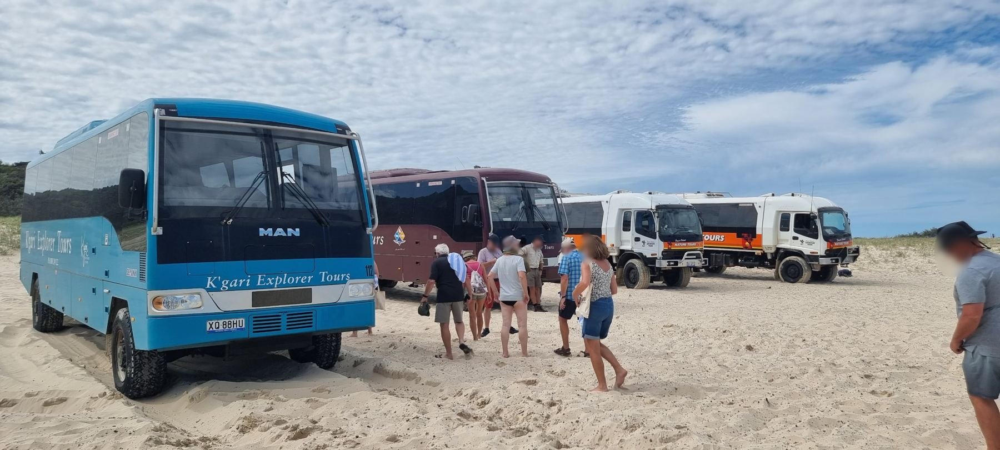
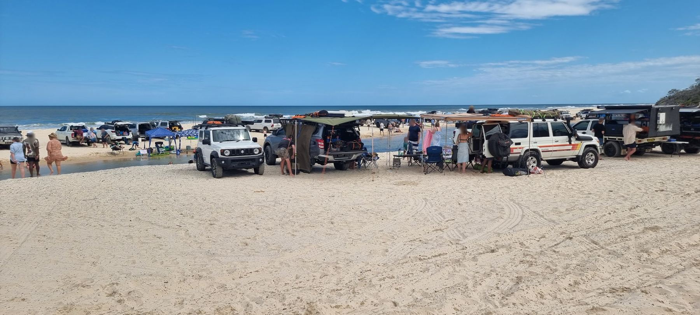
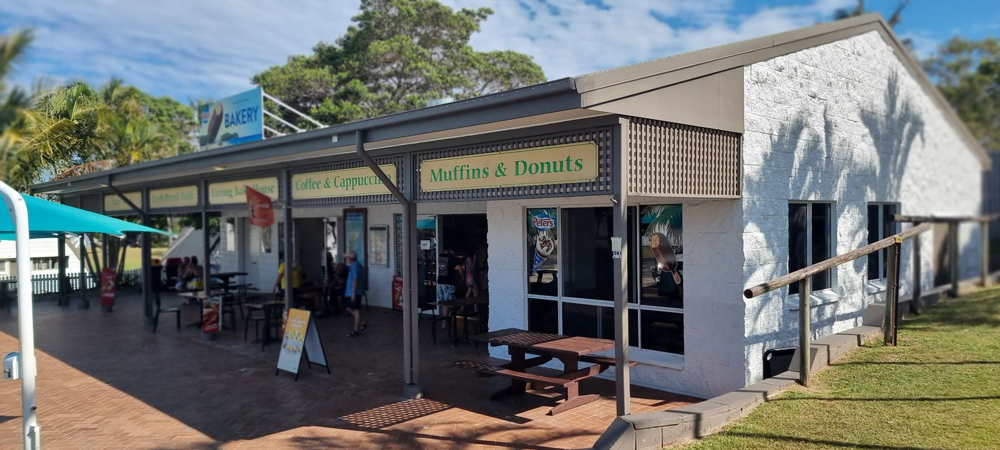
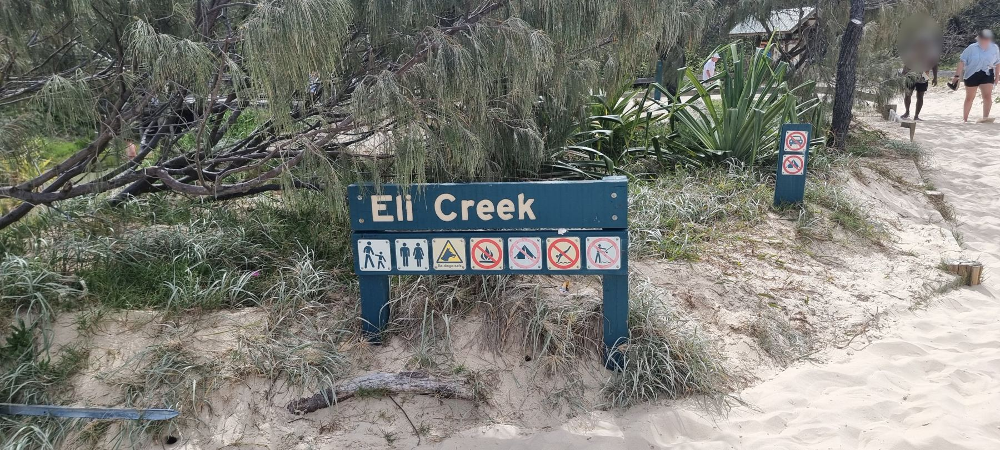
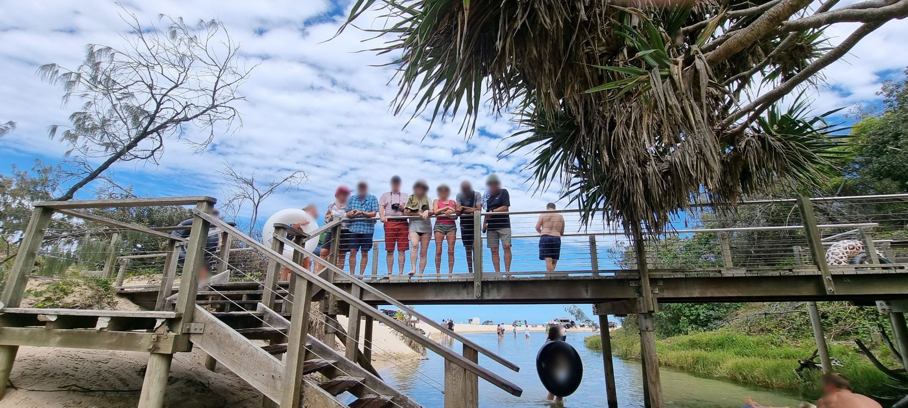
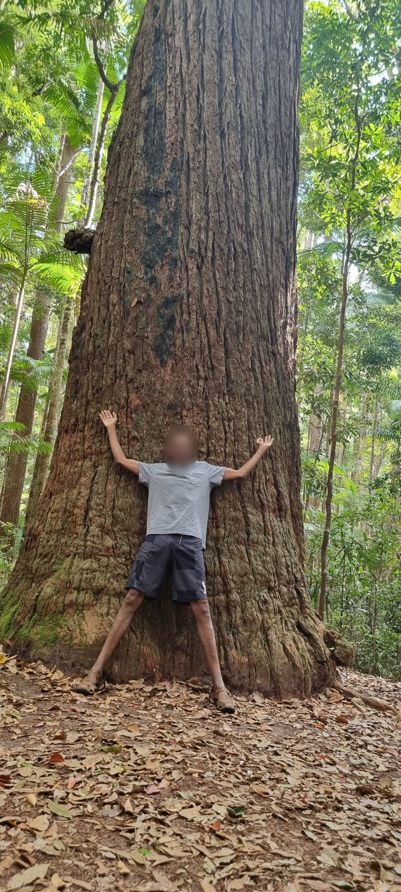
Brisbane · Lone Pine Koala Sanctuary
Letzter Halt: Brisbane. Nach zehn Tagen und 1.150 km auf der Straße war es Zeit, die Einheimischen kennenzulernen.
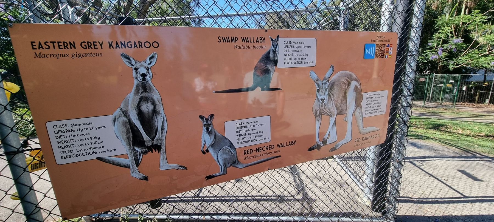
Zehn Tage, 1.150 km
Es gab ein paar rein deutsche Probleme, die ich nicht lösen konnte. Es begann im Chaos und endete in guter Gesellschaft. Mit einigen von ihnen bin ich bis heute in Kontakt.
Zehn Tage lang war ich wieder unter den Menschen und in der Sprache, die ich zurückgelassen hatte, als ich Deutschland verließ. Komisch, wie ein Reisebus in Queensland einen zurück nach Freiburg bringen kann.
Glaubt mir, es ist gut gegangen.
Danach
Zwei weitere Touren in diesen Teil der Welt folgten. Eine führte eine andere deutsche Gruppe zu den Whitsundays und zum Whitehaven Beach, und diesmal stand Schnorcheln auf dem Programm.
Eine andere Tour brachte die schwierigsten Charaktere überhaupt. Danach ging ich zum Chef und hörte auf. ✋
Keine Europäer mehr. Es sind nur Kopfschmerzen. Nur noch Englisch: Amerikaner, Kanadier. Entspannt, dankbar, glücklich.
Nie wieder. Außer es ist eine Person oder ein Paar.
Heute
Kleine Touren, ein Gast oder zwei
Für jeden etwas
Strände, Regenwald, die Stadt, die Inseln, der Zoo. Oder vielleicht bist du einfach wegen Essen und Trinken hier. Es gibt immer etwas zu bieten.
Die Whitsundays, zum zweiten Mal
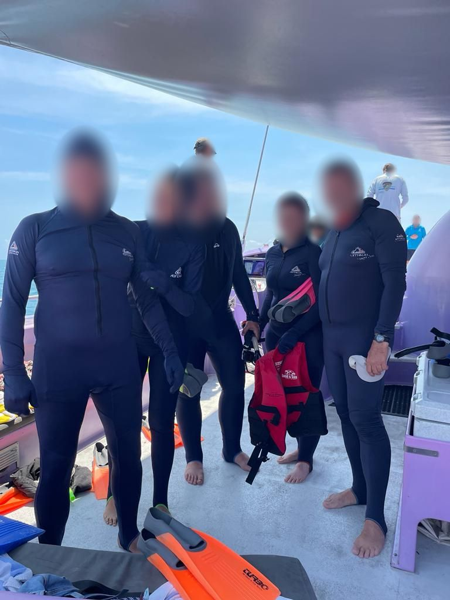
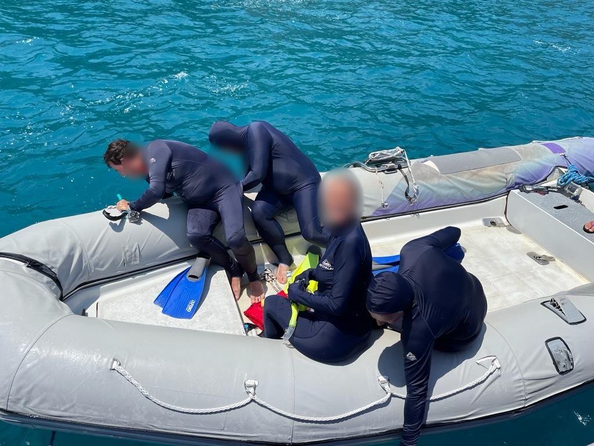
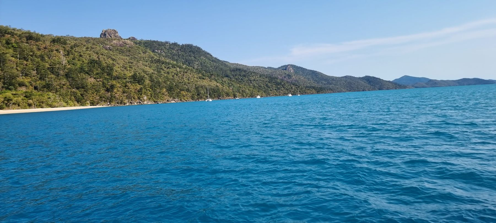
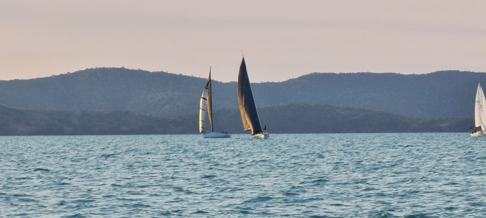